Chapter 12. 생성형 모델(Generative Model)¶
1절. 생성 모델
2절. 오토 인코더(Auto Encorder)
3절. GAN(Generative
1절. 생성 모델¶
생성 모델(Generative Model)¶
- 훈련 데이터의 규칙성 또는 패턴을 자동으로 발견 및 학습
- 훈련 데이터의 확률 분포와 유사하지만, 새로운 샘플을 생성하는 신경망
- 훈련 데이터들의 잠재 공간 표현 학습
- 학습 종료 후, 잠재 공간에서 랜덤의 한 좌표가 입력되면 대응하는 출력 생성 가능
훈련 데이터 생성 규칙¶
- 생성 모델이 사실적인 몬드리안 스타일의 그림을 생성할 수 있다고 가정하자.
- 생성 모델은 몬드리안 스타일의 일반적인 규칙이 학습된 것
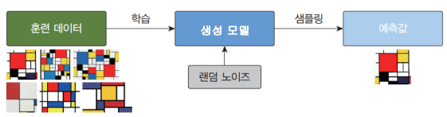
확률직어니 생성 모델¶
- 모든 샘플 이미지에 대하여 각 픽셀 위치에서 픽셀값의 평균을 계산
- 샘플 이미지와 유사한 출력 생성
-
하지만 고정된 계산일 경우, 생성 모델이 매번 동일한 출력 생성(결정적)
-
생성 모델은 출력에 영향을 미치는 확률적인 무작위 요소 포함
- 학습이 종료된 후에 입력되는 랜덤 노이즈
분류 모델(discriminative modeling)¶
- 데이터 \(x\) 와 레이블 \(y\) 가 주어지면 분류 모델은 x가 어떤 부류에 속하는지 판단
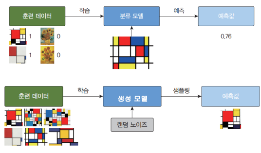
분류 모델과 생성 모델의 차이¶
- 분류 모델 : 조건부 확률 \(p(y|x)\) 탐색
-
샘플 \(x\) 가 주어진 상태에서 레이블 \(y\) 확률 추정
-
생성 모델 : 입력 데이터의 확률 분포 \(p(x)\) 탐
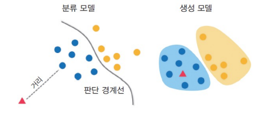
Keras의 함수형 API¶
- 함수형 API
- 사용 시 원하는 방식의 객체들 연결 가능
- ex) 은닉층의 출력을 알고자 할 경우 사용
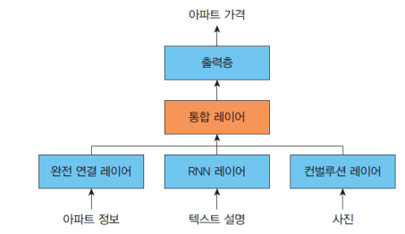
예제_MNIST 숫자 이미지 처리 신경¶
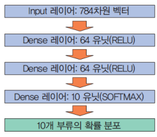
import numpy as np
import tensorflow as tf
from tensorflow import keras
from tensorflow.keras import layers
inputs = keras.Input(shape=(784,)) # (1)
dense = layers.Dense(64, activation="relu") # (2)
x = dense(inputs) # (3)
x = layers.Dense(64, activation="relu")(x) # (4)
outputs = layers.Dense(10)(x) # (5)
# (x)의 의미
# tmp = layers.Dense(64, activation="relu")
# x = tmp(x)
model = keras.Model(inputs=inputs, outputs=outputs)
(x_train, y_train), (x_test, y_test) = keras.datasets.mnist.load_data()
x_train = x_train.reshape(60000, 784).astype("float32") / 255
x_test = x_test.reshape(10000, 784).astype("float32") / 255
model.compile(
loss = keras.losses.SparseCategoricalCrossentropy(from_logits=True),
optimizer=keras.optimizers.RMSprop(),
metrics=["accuracy"],
)
history = model.fit(x_train, y_train, batch_size=64, epochs=2, validation_split=0.2)
test_scores = model.evaluate(x_test, y_test, verbose=2)
Sequential 모델과 함수형 API¶
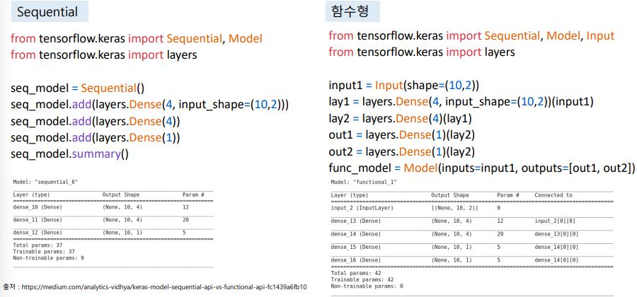
- 함수형 API의 필요 이유
- 통합된 레이어로의 표현을 원하기 떄문
- 서로 다른 특징(그림, 텍스트, 숫자)들의 다양한 정보들을 하나로 연결
- 분류 모델의 경우 Sequential이 유용했으나 서로 다른 특징을 합칠 경우 함수형 API 필요
2절. 오토 인코더(Auto Encorder)¶
기본형 오토 인코더(Auto Encorder)¶
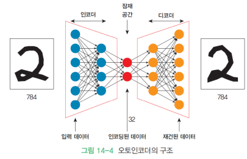
- 입력과 동일한 출력을 만드는 것을 목적으로 하는 신경망
- 사이즈가 줄어들었다가 커지는 마름모꼴 형태의 구조
- 특징 학습, 차원 축소, 표현 학습 등 사용
오토 인코더의 요소¶
- 인코더(encoder) : 입력을 잠재 표현으로 인코딩(입력)
- 디코더(decoder) : 잠재 표현을 풀어 입력 복원(출력)
- 손실 함수 : 입력 이미지와 출력 이미지의 MSE 사용
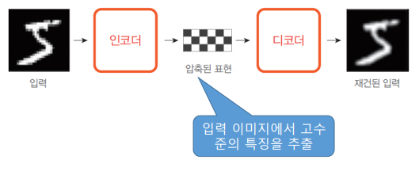
예제_필기체 숫자 압축 오토 인코더¶
import matplotlib.pyplot as plt
import numpy as np
import tensorflow as tf
encoding_dim = 32 # 32 픽셀로 압출
# 함수형 API로 신경망 구성
input_img = tf.keras.layers.Input(shape=(784,))
encoded = tf.keras.layers.Dense(encoding_dim, activation='relu')(input_img)
decoded = tf.keras.layers.Dense(784, activation='sigmoid')(encoded)
autoencoder = tf.keras.models.Model(input_img, decoded)
autoencoder.compile(optimizer='adam', loss=tf.keras.losses.MeanSquaredError())
# 손실 함수로 MSE 사용, 픽셀 간 차이 계산
mnist = tf.keras.datasets.mnist
(x_train, _), (x_test, _) = mnist.load_data()
x_train = x_train.astype('float32') / 255. # 28 x 28 사이즈
x_test = x_test.astype('float32') / 255. # 28 x 28 사이즈
x_train = x_train.reshape((len(x_train), np.prod(x_train.shape[1:]))) # 28 x 28 = 784 사이즈
x_test = x_test.reshape((len(x_test), np.prod(x_test.shape[1:]))) # 28 x 28 = 784 사이즈
# 1차원 평탄화
autoencoder.fit(x_train, x_train,
epochs=50,
batch_size=256,
shuffle=True,
validation_data=(x_test, x_test))
decoded_imgs = autoencoder.predict(x_test)
n = 10
plt.figure(figsize=(20, 6))
for i in range(1, n + 1):
ax = plt.subplot(2, n, i)
plt.imshow(x_test[i].reshape(28, 28), cmap='gray')
ax = plt.subplot(2, n, i + n)
plt.imshow(decoded_imgs[i].reshape(28, 28), cmap='gray')
plt.show()
- 실행 결과
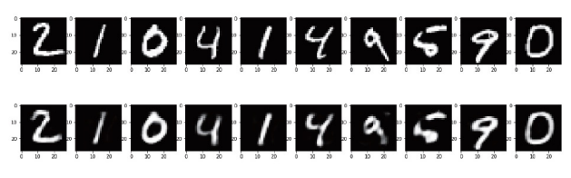
- 기존(위 쪽) 데이터보다 약간 흐리멍텅 + 뭉개진 느낌
노이즈 제거 오토 인코더¶
- 노이즈(noise)가 있는 이미지에서 노이즈 제거 용도로 사용 가능
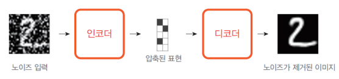
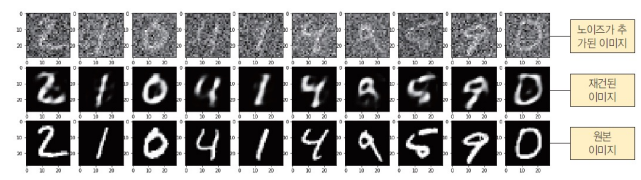
예제_잡음이 들어간 필기체 숫자 복원 오토 인코더¶
import matplotlib.pyplot as plt
import numpy as np
import tensorflow as tf
encoding_dim = 32
input_img = tf.keras.layers.Input(shape=(784,))
encoded = tf.keras.layers.Dense(encoding_dim, activation='relu')(input_img)
decoded = tf.keras.layers.Dense(784, activation='sigmoid')(encoded)
autoencoder = tf.keras.models.Model(input_img, decoded)
mnist = tf.keras.datasets.mnist
# MNIST 데이터 처리리
(x_train, _), (x_test, _) = mnist.load_data()
x_train = x_train.astype('float32') / 255.
x_test = x_test.astype('float32') / 255.
x_train = x_train.reshape((len(x_train), np.prod(x_train.shape[1:])))
x_test = x_test.reshape((len(x_test), np.prod(x_test.shape[1:])))
noise_factor = 0.55
original_train = x_train
original_test = x_test
# 넘파이 연산을 통한 영상 노이즈 추가
noise_train = np.random.normal(0, 1, original_train.shape)
noise_test = np.random.normal(0, 1, original_test.shape)
noisy_train = original_train + noise_factor * noise_train
noisy_test = original_test + noise_factor * noise_test
# 학습 및 예측
autoencoder.compile(optimizer='adam', loss='mse')
autoencoder.fit(noisy_train, original_train,
epochs=50,
batch_size=256,
shuffle=True,
validation_data=(noisy_test, original_test))
denoised_images = autoencoder.predict(noisy_test)
n = 10
plt.figure(figsize=(20, 6))
for i in range(1, n + 1):
ax = plt.subplot(3, n, i)
plt.imshow(noisy_test[i].reshape(28, 28), cmap='gray')
plt.gray()
ax = plt.subplot(3, n, i + n)
plt.imshow(denoised_images[i].reshape(28, 28), cmap='gray')
plt.gray()
ax = plt.subplot(3, n, i + 2*n)
plt.imshow(original_test[i].reshape(28, 28), cmap='gray')
plt.gray()
plt.show()
- 실행 결과
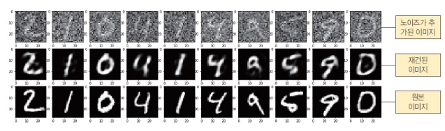
3절. GAN(Generative Adversarial Network)¶
생성적 적대 신경망(GAN : Generative Adversarial Network)¶
- Goodfellow(2014) 등이 설계한 신경망 모델
- 생성자 신경망과 판별자 신경망이 서로 적대적(반대 행동)으로 경쟁
-
훈련을 통하여 자신의 작업을 점점 정교하게 수행
-
GAN 결과물
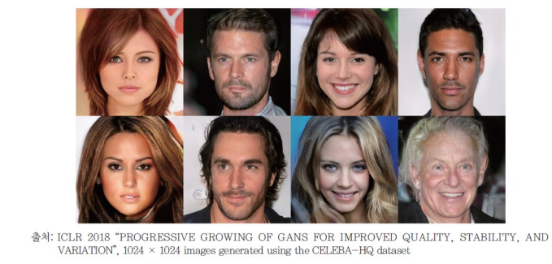
구조¶
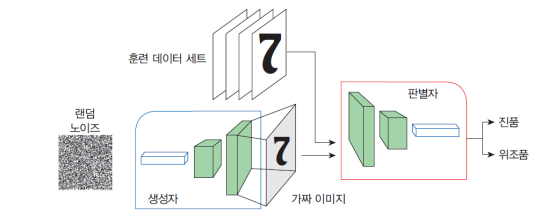
- 생성자(generator)
- 가짜 데이터를 생성을 학습
-
생성된 데이터는 판별자를 위한 학습 예제로 사용
-
판별자(discriminator)
- 생성자의 가짜 데이터를 진짜 데이터와 구분하는 방법 학습
- 생성자가 유사하지 않은 데이터를 생성하면 불이익
목표¶
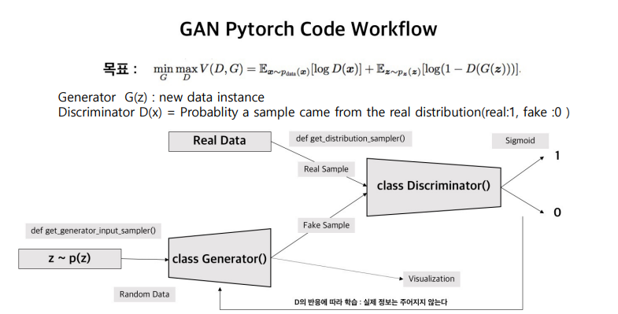
- z ~ p(z) : 확률 분포 값
- sigmoid 함수를 통해 1과 0으로 확실한 분류의 목적
- 생성자는 속일 수 있는 가짜 데이터의 정확도 상승
- 판별자는 가짜 데이터와 진짜 데이터의 확실한 구분
- 1과 0의 큰 차이를 벌리는 것이 궁극적인 목표(출력값)
훈련 과정¶
- 판별자 훈련과 생성자 훈련을 번갈아 가며 수행
- GAN 훈련의 시작
- 생성자는 아직 무엇을 만들어야 하는지 모름
-
입력으로 임의의 노이즈가 공급되면 출력으로 임의의 노이즈 이미지 생성
-
저품질 가짜 이미지는 진짜 이미지와 극명한 대조 : 판별자는 처음에 진짜 여부 판별 시 문제 없음
- 그러나 생성자가 훈련되면서 진짜 이미지의 일부 구조를 복제하는 방법을 점차적 학습
사진 생성 GAN¶
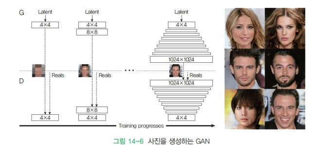
훈련 과정¶
판별자¶
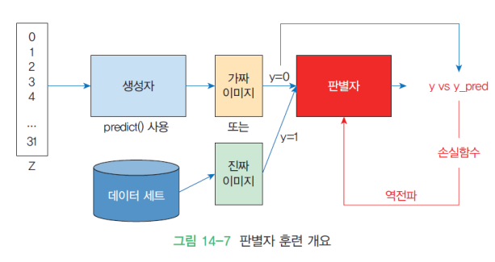
생성자¶
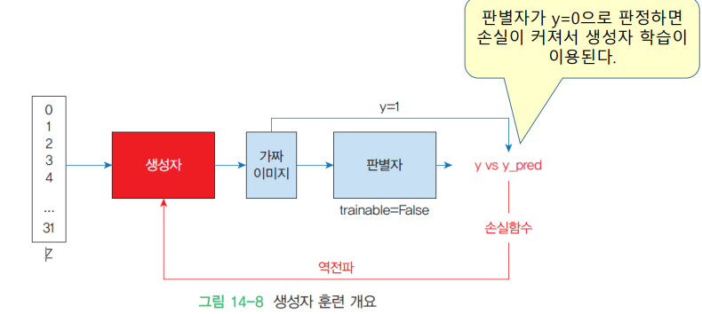
예제_GAN 숫자 이미지 생성¶
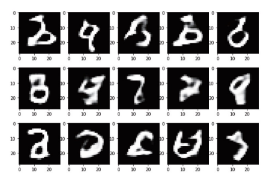
import numpy as np
import tensorflow as tf
from matplotlib import pyplot as plt
# 학습 데이터와 테스트 데이터 분리
(x_train, y_train), (x_test, y_test) = tf.keras.datasets.mnist.load_data()
# 이미지를 [0, 1] 범위로 스케일링
x_train = x_train.astype("float32") / 255
x_test = x_test.astype("float32") / 255
# 입력 데이터 평탄화
BATCH_SIZE = 128
EPOCHS = 2000
Z_DIMENSIONS = 32
data = np.reshape(x_train, (x_train.shape[0], 28, 28, 1))
# 판별자 신경망 구축
def make_discriminator():
model = tf.keras.Sequential()
model.add(tf.keras.layers.Conv2D(64, (5, 5), strides=(2, 2), padding='same',
activation='relu', input_shape=[28, 28, 1]))
model.add(tf.keras.layers.Dropout(0.4))
model.add(tf.keras.layers.Conv2D(128, (5, 5), strides=(2, 2), padding='same',
activation='relu'))
model.add(tf.keras.layers.Dropout(0.4))
model.add(tf.keras.layers.Conv2D(256, (5, 5), strides=(2, 2), padding='same',
activation='relu'))
model.add(tf.keras.layers.Dropout(0.4))
model.add(tf.keras.layers.Flatten())
model.add(tf.keras.layers.Dense(1, activation='sigmoid'))
return model
discriminator = make_discriminator()
discriminator.compile(loss='binary_crossentropy',
optimizer=tf.keras.optimizers.Adam(lr=0.0004),
metrics=['accuracy'])
# 생성자 신경망 구축
def make_generator():
model = tf.keras.Sequential()
model.add(tf.keras.layers.Dense(7*7*64, input_shape=(Z_DIMENSIONS,)))
model.add(tf.keras.layers.BatchNormalization(momentum=0.9))
model.add(tf.keras.layers.LeakyReLU())
model.add(tf.keras.layers.Reshape((7, 7, 64)))
model.add(tf.keras.layers.Dropout(0.4))
model.add(tf.keras.layers.UpSampling2D())
model.add(tf.keras.layers.Conv2DTranspose(32,
kernel_size=5, padding='same',
activation=None,))
model.add(tf.keras.layers.BatchNormalization(momentum=0.9))
model.add(tf.keras.layers.LeakyReLU())
model.add(tf.keras.layers.UpSampling2D())
model.add(tf.keras.layers.Conv2DTranspose(16,
kernel_size=5, padding='same',
activation=None,))
model.add(tf.keras.layers.BatchNormalization(momentum=0.9))
model.add(tf.keras.layers.LeakyReLU())
model.add(tf.keras.layers.Conv2D(1, kernel_size=5, padding='same',
activation='sigmoid'))
return model
# 생성자 생성 및 테스트 : 완전한 노이즈만 출력되어야 함
generator = make_generator()
noise = tf.random.normal([1, Z_DIMENSIONS])
generated_image = generator(noise, training=False)
plt.imshow(generated_image[0, :, :, 0], cmap='gray')
# 생성적 적대 신경망 구축
z = tf.keras.layers.Input(shape=(Z_DIMENSIONS,))
fake_image = generator(z)
discriminator.trainable = False
prediction = discriminator(fake_image)
gan_model = tf.keras.models.Model(z, prediction)
gan_model.compile(loss='binary_crossentropy',
optimizer=tf.keras.optimizers.Adam(lr=0.0004),
metrics=['accuracy'])
# GAN 학습
def train_gan():
for i in range(EPOCHS):
real_images = np.reshape(
data[np.random.choice(data.shape[0],
BATCH_SIZE,
replace=False)], (BATCH_SIZE,28,28,1))
fake_images = generator.predict(
np.random.uniform(-1.0, 1.0,
size=[BATCH_SIZE, Z_DIMENSIONS]))
# 진짜 이미지와 가짜 이미지 붙임
x = np.concatenate((real_images,fake_images))
# 정답 레이블 생성
y = np.ones([2*BATCH_SIZE,1])
y[BATCH_SIZE:,:] = 0
# 판별자 훈련
discriminator.train_on_batch(x, y)
noise = np.random.uniform(-1.0, 1.0, size=[BATCH_SIZE, Z_DIMENSIONS])
y = np.ones([BATCH_SIZE,1])
# 노이즈 입력으로 생성자 훈련
gan_model.train_on_batch(noise, y)
if i%100 == 0:
noise = np.random.uniform(-1.0, 1.0,
size=[5, Z_DIMENSIONS])
generated_image = generator.predict(noise)
plt.figure(figsize=(10,10))
# 중간 결과 출
for i in range(generated_image.shape[0]):
plt.subplot(1, 5, i+1)
plt.imshow(generated_image[i, :, :, 0],
cmap='gray')
plt.show()
train_gan()
- 실행 결과
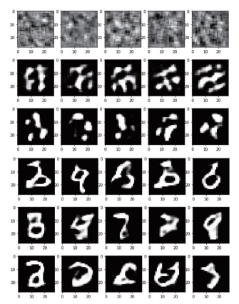
판별자¶
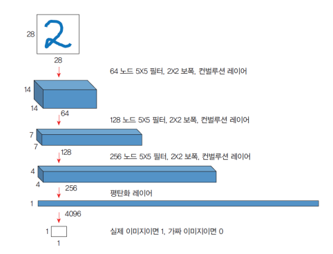
생성자¶
- 생성자 신경망 구축
- 생성자는 일반적인 컨볼루션 레이어의 반대 기능을 수행
- 일반적인 컨벌루션 레이어는 입력 이미지로부터 특징을 추출하여서 활성화 맵을 출력
- GAN 생성자는 활성화 맵으로 이미지를 구성
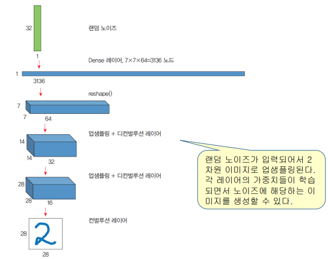